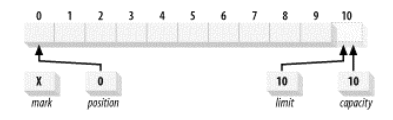
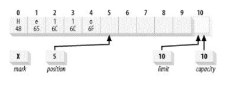
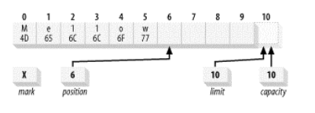
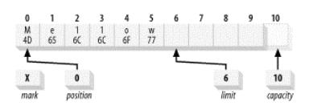

Java NIO 由以下几个核心部分组成:
虽然 Java NIO 中除此之外还有很多类和组件，但在我看来，Channel，Buffer 和 Selector 构成了核心的API。
Buffer 缓冲区，以及缓冲区如何工作，是所有 I/O 的基础。所谓输入/输出讲的无非就是把数据移进或移出缓冲区。
概念: 实际上缓冲区就是一个包含在对象里的基本数据元素数组
属性: 所有的缓冲区都具有四个属性来提供关于其所包含的数据元素的信息，它们是:
- 容量（Capacity）: 缓冲区能够容纳的数据元素的最大数量。这一容量在缓冲区创建时被设定，并且永远不能被改变。
- 上界（Limit）: 缓冲区的第一个不能被读或写的元素。或者说，缓冲区中现存元素的计数。
- 位置（Position）: 下一个要被读或写的元素的索引。位置会自动由相应的 get() 和 put() 函数更新。
- 标记（Mark）: 一个备忘位置。调用 mark() 来设定 mark = postion，调用 reset() 设定position = mark，标记在设定前是未定义的 (undefined)。
看下图新创建一个ByteBuffer:

通过 ByteBuffer.allocate(11) 方法创建一个 10 个 byte 的数组缓冲区，初始状态如上图所示，position 的位置为 0，capacity 和 limit 默认都是数组长度。当我们写入 5 个字节时位置变化如下图所示：

这时如果想在不丢失位置的情况下进行一些修改，比如说将 hello 更改为 MelloW
可以这样实现 buffer.put(0,(byte)'M').put((byte)'w') 修改后的 Buffer 图像如下:

如果想将缓冲区的 5 个字节数据写入 Channel 通信信道，我们需要调用 byteBuffer.flip() 方法，数组的状态又发生如下变化:

还有一个方法 **rewind()**，会重置 position 的位置为 0，但不改变 limit 的位置，可以使用rewind() 后退，重读已经被翻转的缓冲区中的数据。
1
2
3
4
5
6
7
8
9
10
11
12
13
14
15
16
17
18
19
20
21
22
23
24
25
26
27
28
29
30
31
| import java.nio.CharBuffer;
public class Test {
public static void main(String[] argv) throws Exception {
CharBuffer buffer = CharBuffer.allocate(20);
System.out.println("初始化时候：position=" + buffer.position() + " limit=" + buffer.limit());
fillBuffer(buffer, "hello");
System.out.println("填入hello以后：position=" + buffer.position() + " limit=" + buffer.limit());
buffer.put(0, 'M').put('w');
System.out.println("修改成Mellow后：position=" + buffer.position() + " limit=" + buffer.limit());
buffer.flip();
System.out.println("翻转后：position=" + buffer.position() + " limit=" + buffer.limit());
buffer.clear();
System.out.println("clear后：position=" + buffer.position() + " limit=" + buffer.limit());
buffer.position(0);
while (buffer.hasRemaining()) {
System.out.println(buffer.get());
}
}
private static void fillBuffer(CharBuffer buffer, String string) {
for (int i = 0; i < string.length(); i++) {
buffer.put(string.charAt(i));
}
}
}
|
输出:
1
2
3
4
5
6
7
8
9
10
11
| 初始化时候：position=0 limit=20
填入hello以后：position=5 limit=20
修改成Mellow后：position=6 limit=20
翻转后：position=0 limit=6
clear后：position=0 limit=20
M
e
l
l
o
w
|
从上面例子可以看出 clear() 后实际上 buffer 中数据还是存在的。如果 Buffer 中有一些未读的数据，调用 clear() 方法，数据将“被遗忘”，意味着不再有任何标记会告诉你哪些数据被读过，哪些还没有。
如果 Buffer中仍有未读的数据，且后续还需要这些数据，但是此时想要先先写些数据，那么使用 compact() 方法，看下面代码：
1
2
3
4
5
6
7
8
9
10
11
12
13
14
15
16
17
18
19
20
21
22
23
24
25
26
| import java.nio.CharBuffer;
public class Test {
public static void main(String[] argv) throws Exception {
CharBuffer buffer = CharBuffer.allocate(11);
fillBuffer(buffer,"hello world");
buffer.position(6);
buffer.compact();
buffer.put("j");
buffer.put("a");
buffer.put("v");
buffer.put("a");
buffer.flip();
while (buffer.hasRemaining()) {
System.out.print(buffer.get());
}
}
private static void fillBuffer(CharBuffer buffer, String string) {
for (int i = 0; i < string.length(); i++) {
buffer.put(string.charAt(i));
}
}
}
|
输出:
compact() 方法将所有未读的数据拷贝到 Buffer 起始处。然后将 position 设到最后一个未读元素正后面。limit 属性依然像 clear() 方法一样，设置成 capacity。现在 Buffer 准备好写数据了，但是不会覆盖未读的数据。其它还有 mark() 与 reset() equals() 等方法 就不一一介绍了。
参考资料